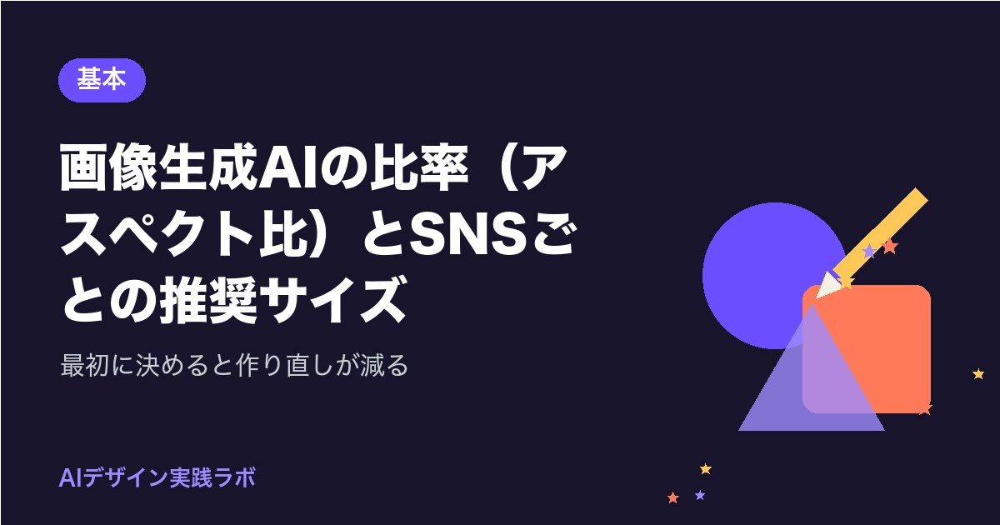
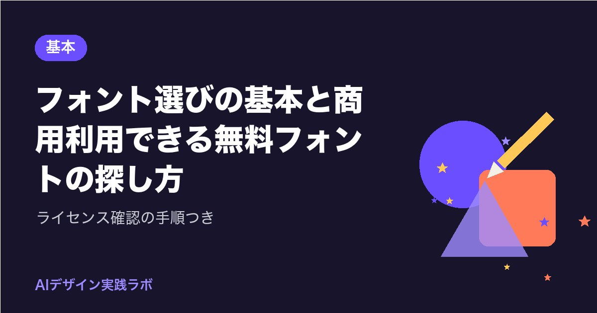
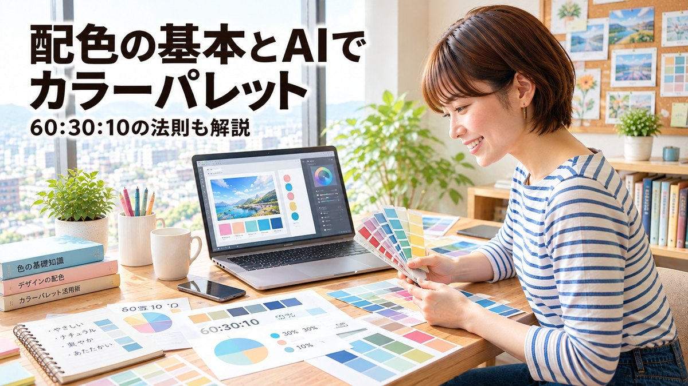
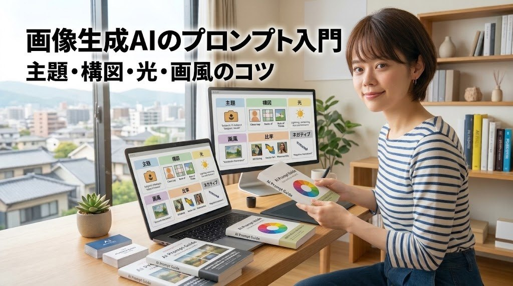

ホーム ＞ 基本
基本 の記事一覧（4件）

基本2026-10-20画像生成AIの比率（アスペクト比）とSNSごとの推奨サイズ｜最初に決めると作り直しが減る
画像生成AIで作った画像が、SNSに載せると切れたり小さく見えたりするのは、比率（アスペクト比）の決め方が原因のことが多いです。Instagram・X・YouTube・Facebookなど主なSNSの推奨サイズと比率の目安、AIに比率を伝える指示の書き方、1枚の画像を複数のSNS向けに展開するコツを解説します。

基本2026-10-20フォント選びの基本と商用利用できる無料フォントの探し方｜ライセンス確認の手順つき
AIで作った画像やチラシに文字を載せるとき、どのフォントを選べば読みやすく、安心して商用利用できるのかがわかります。明朝体とゴシック体の使い分け、1枚に使うフォントの数の目安、無料フォントの探し方と、ライセンス（利用条件）を確かめる手順を初心者向けに整理しました。

基本2026-10-13配色の基本とAIでカラーパレットを作る方法｜60:30:10の法則も解説
デザイン初心者向けに、配色の基本である60:30:10の法則、補色、トーンの考え方をわかりやすく解説します。さらに、ChatGPTやClaudeなどのAIでカラーパレットを作る手順と、使う前のチェック方法も紹介します。

基本2026-10-13画像生成AIのプロンプトの書き方入門｜主題・構図・光・画風のコツ
画像生成AIで思いどおりの画像を出すためのプロンプトの書き方を解説します。主題・構図・光・画風・比率・ネガティブの6要素を表で整理し、組み立て方の手順と、うまくいかないときの直し方までまとめました。
次の一歩に役立つ道具・本
ノンデザイナーズ・デザインブックレイアウトの4原則が身につく定番書参考（2026年10月の人気）：Amazon：ノンデザイナーズ・デザインブック［第4版］ ／ 楽天：ノンデザイナーズ・デザインブック 第4版
Amazon楽天配色アイデア手帖配色に迷ったときの見本帳参考（2026年10月の人気）：Amazon：配色アイデア手帖［完全保存版］第2版・配色アイデア手帖 日本の美しい色と言葉 ／ 楽天：配色アイデア手帖 めくって見つける新しいデザインの本・配色アイデア手帖 色とイラスト・配色アイデア手帖 世界を彩る色と文化
Amazon楽天なるほどデザインデザインの考え方を図解で学べる参考（2026年10月の人気）：Amazon：なるほどデザイン〈目で見て楽しむ新しいデザインの本。〉 ／ 楽天：なるほどデザイン 目で見て楽しむデザインの本。
Amazon楽天